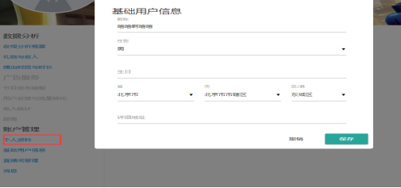
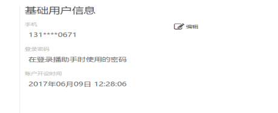
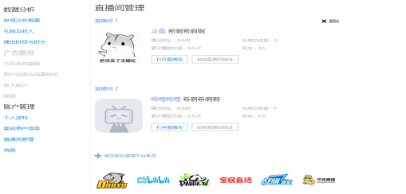
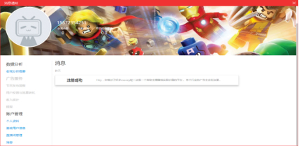
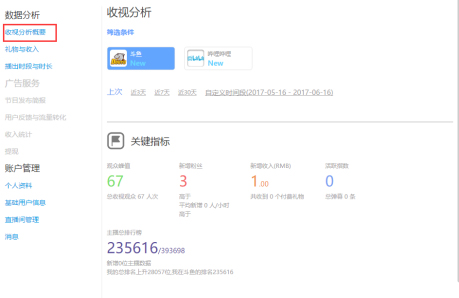

1 个人资料：个人资料显示主播的基本信息，点击编辑可对昵称，性别，生日。所在地进行修改；

2 基础用户资料：基础用户资料用于修改主播的绑定手机号和密码，显示主播的注册时间，可以点击编辑对绑定的手机号和密码进行修改；

3 直播间管理：主播可以在这里对直播间进行增加和删除。选择点击底部的直播间图标就可以新增绑定账号，鼠标移动到已绑定的直播间时右上角显示删除按钮，点击可以删除绑定的直播间；

4 消息：点击界面消息图标，可以进入消息列表页面，这里显示所有主播消息通知。点击消息可以查看详情

1 收视分析概要：主播可以根据这里的数据查看了解直播过程的情况。这里显示每一次直播的观众，粉丝，收入等数据，可以选择需要统计的时间段进行查看统计数据；

2 礼物与收入：统计显示主播在直播期间的礼物如收入情况；
3 播出时段与时长：统计显示主播的直播时段与时长；